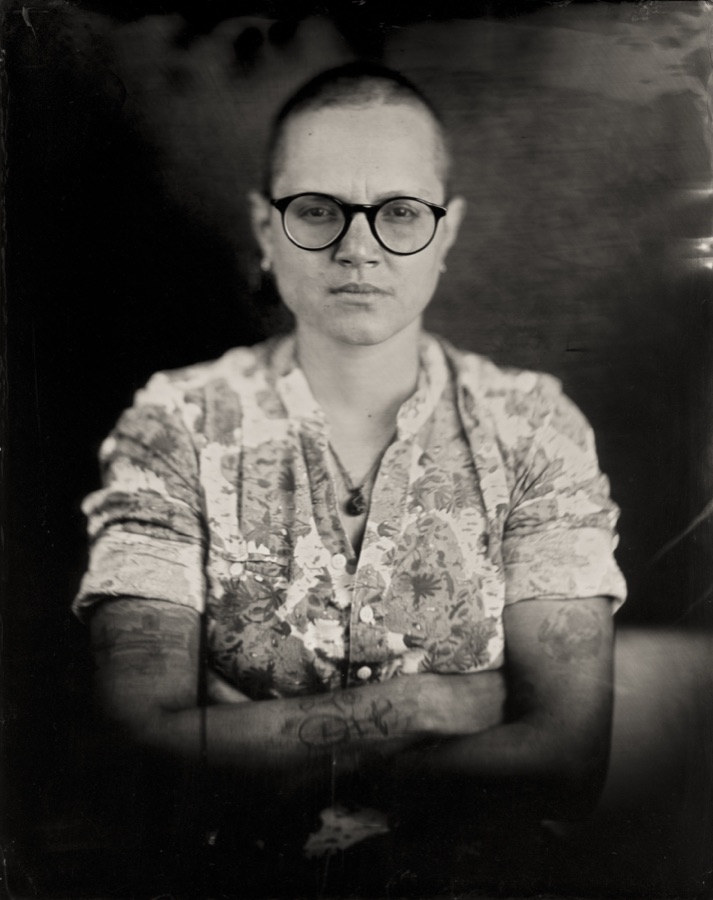

I’m a physicist and data scientist. I work as a scientific researcher at the University of Geneva, in Switzerland, on wine chemistry and artificial intelligence. I use gas chromatography–mass spectrometry and machine learning to explore how a wine’s chemical profile reflects its terroir (the influence of soil, climate and local environment), winemaker’s style and sensorial characteristics. Before applying my data science skills to wine, I spent a big chunk of my career in astrophysics research. My main research topic was the formation and evolution of stars similar to our Sun, which I studied through astronomical observations, numerical models and data science. The research questions changed, but the problem I work with stayed the same: reading the history of a complex system from the faint signals it leaves in the data, whether the light of a young star or the chemical signature of a wine.

Photo by Nicolas Blind, shot with the collodion plate process as part of the Reflections exhibition celebrating diversity at the Geneva Observatory (June 2022).